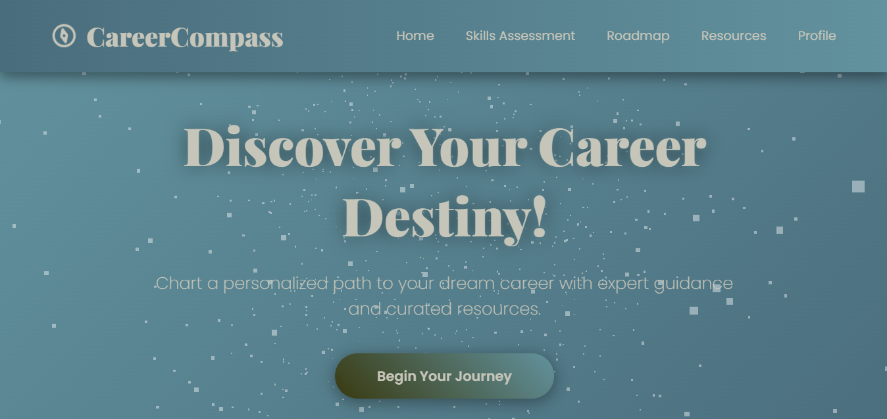
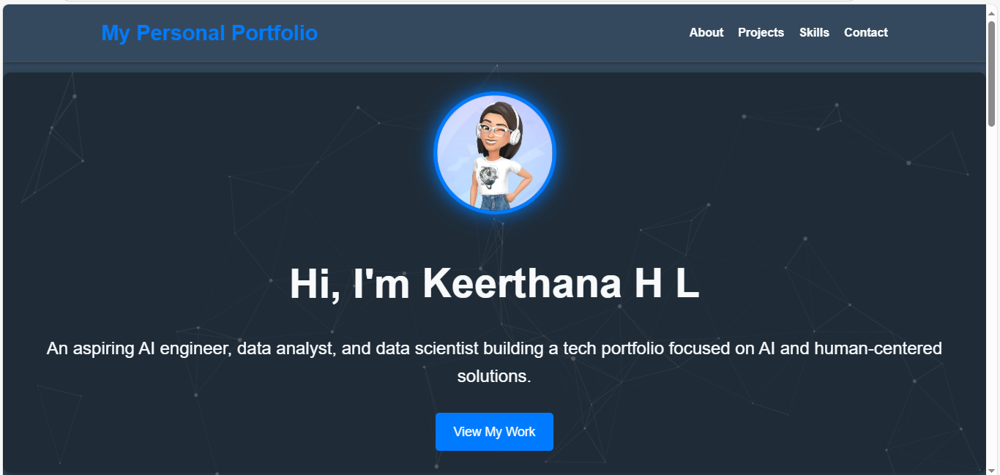
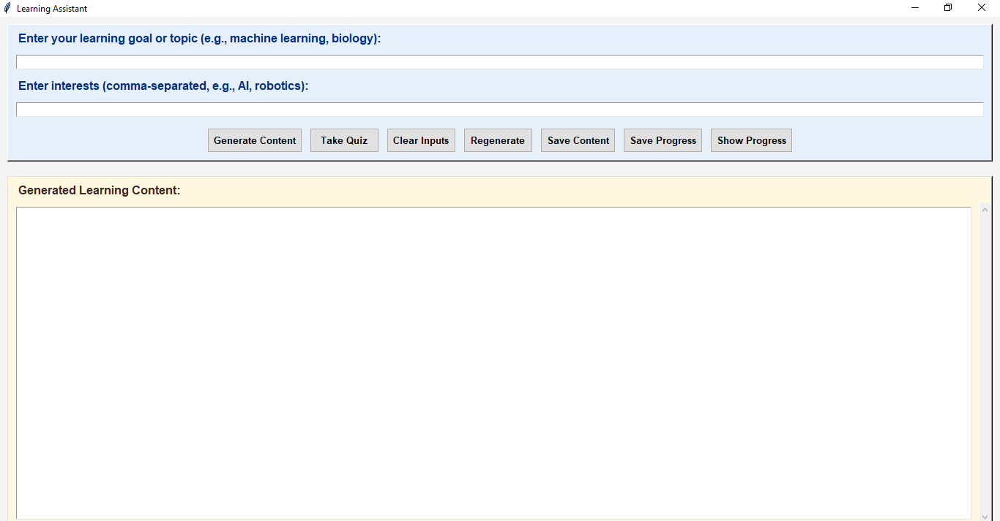
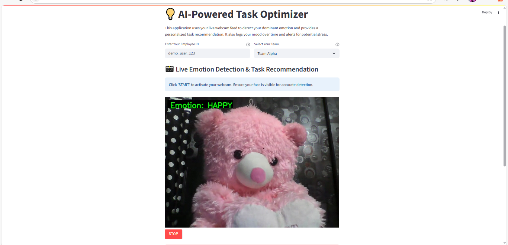

An aspiring AI engineer, data analyst, and data scientist building a tech portfolio focused on AI and human-centered solutions.
View My WorkWelcome to my portfolio! I'm a Keerthana H L with a strong passion for AI-powered problem solving and real-world impact. I enjoy “Beyond developing AI-driven solutions, I enjoy exploring urban tech, visualizing data in meaningful ways, participating in hackathons, and experimenting with human-AI interaction through multimodal apps. I’m also passionate about design, storytelling with data, and automating everyday problems with creative tech.”
Outside of tech, I enjoy painting, singing, and experimenting in the kitchen. These creative hobbies help me recharge and bring fresh perspectives to problem-solving. I'm eager to learn and currently seeking opportunities in software development.
Helped students and job seekers receive personalized career roadmaps and skill recommendations by analyzing their resumes and preferences using AI. Technologies used: Python, Flask, Gemini API, HTML/CSS, JavaScript, Git, RESTful APIs, PythonAnywhere. ML/NLP Techniques: Resume parsing, keyword extraction, career clustering using embeddings.
Built a dynamic personal portfolio to highlight AI and data science projects, with an intuitive layout and live demos. Solved the challenge of organizing complex content in a clean, user-friendly interface.Technologies used:HTML,CSS,Javascript.
This project provides customized learning content and quizzes based on user input using NLP. It adapts to individual learning needs, helping users grasp topics more efficiently. Ideal for students and self-learners, it enhances engagement through interactive, AI-driven assistance. Built using Python, TensorFlow, and NLP (spaCy, NLTK) to deliver personalized educational content. Employed supervised learning and recommendation algorithms.
AI Task Optimizer intelligently analyzes user input and context to recommend the most suitable tasks. It helps improve productivity by aligning tasks with mood, focus level, or priority. Ideal for personal workflow management or as a smart assistant in project teams. Technologies used: Python (Streamlit, OpenCV, DeepFace, Streamlit-WebRTC, TensorFlow)
HTML5
CSS3
JavaScript
React
Node.js
Python